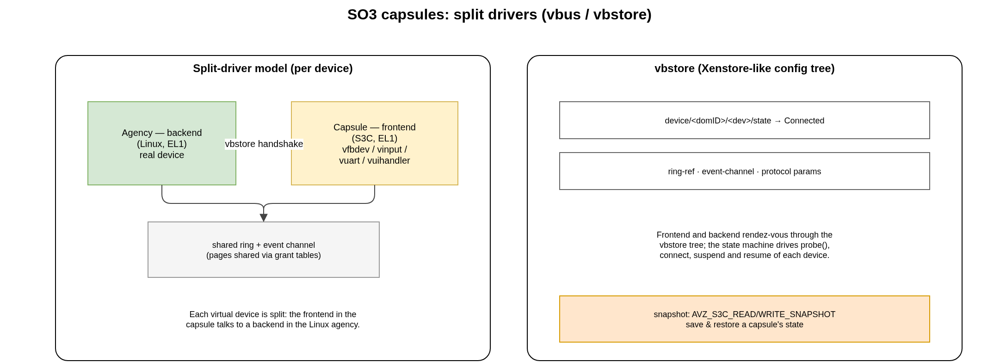

5. SO3 Capsules (SOO framework)
An SO3 Capsule (acronym S3C) is a lightweight, self-contained guest that runs at EL1 on top of the AVZ hypervisor. A capsule does not own any hardware; it cooperates with an agency domain that owns the devices, through split (frontend/backend) drivers.
Note
SO3 Capsule / S3C is the current name and acronym for the concept that
older code and papers called a Mobile Entity (ME). The source tree uses
the S3C acronym in identifiers (S3C_desc_t, S3C_state_t,
S3C_domID, MAX_S3C_DOMAINS …) and capsule in prose. The legacy
ME spelling does not appear in the code.
5.1. The agency: Linux + the SOO framework
The capsule model needs a Linux agency: Linux owns the devices and provides
the backend drivers and the higher-level services that capsules talk to — the
backend half of the frontend/backend split, the vbstore server and the
capsule-management user space (s3c-inject, s3c-list, s3c-save /
s3c-restore).
The so3 build system can fetch and build that agency itself, the same way it
fetches AVZ, U-Boot and QEMU — it need not be built out of tree. The linux
recipe pulls mainline Linux from kernel.org; an opt-in soo override
(meta-linux/recipes-linux/soo and meta-usr/recipes-usr/soo) patches it
into the agency and adds the SOO user space, and the bsp-capsules recipe
deploys Linux as the guest on top of AVZ. It is selected with
EXTRA_OVERRIDES .= ":soo" and a SOO defconfig (virt64_soo_defconfig,
rpi4_64_avz_soo_defconfig for AVZ on the Raspberry Pi 4); see
Build System.
The SOO additions — both the Linux kernel side and the agency user space — are
applied by the soo override as vendored file:// patch sets
(meta-linux/recipes-linux/soo and meta-usr/recipes-usr/soo; the
SOO_URI list is local patches, not a remote fetch). The kernel-side
patches live in a single generic set shared by every agency kernel
(files/soo-generic/); the per-kernel directory (files/0001-<PF>/)
only carries specifics such as the guest device tree, and a same-named
patch placed there shadows its generic counterpart when a kernel version
needs a divergent variant. Only the base Linux
kernel itself is fetched remotely (mainline from kernel.org). Those patches
derive from the SOO framework, developed in the separate
soo project.
What is in this so3 repository is the capsule (guest) side and the hypervisor support for it:
the frontend drivers (
soo/drivers/);the vbus / vbstore clients and the event-channel / grant-table glue (
soo/kernel/);the hypervisor-side capsule build / inject / snapshot code (
avz/kernel/—capsule_build.c,injector.c).
A capsule-capable guest is produced by virt64_capsule_defconfig or
rpi4_64_capsule_defconfig (enabling CONFIG_SOO). The agency runs
SMP on the remaining cores (CPU 0–2 on both platforms) while the last
core (S3C_CPU, CPU 3) is reserved to AVZ for running the capsules. The AVZ demonstration shipped in this repository
(the virt64_avz.its AVZ ITB plus the separate virt64_so3_guest.its
guest ITB — see Two-ITB AVZ boot) boots a plain SO3 guest
(CONFIG_SOO=n), which is enough to exercise the hypervisor; running actual
capsules additionally requires the Linux agency (built with the soo
override described above).
5.2. Split (frontend/backend) drivers
Every virtual device a capsule uses is a split driver: a frontend in the capsule talks to a backend in the Linux agency through a shared memory ring and an event channel (set up with grant tables and event channels).
{kind=link}

Fig. 5.1 Split drivers and the vbstore configuration tree.
The frontends shipped in soo/drivers/ are:
Frontend |
Purpose |
|---|---|
|
virtual framebuffer (display output for the capsule) |
|
virtual input (keyboard / mouse events) |
|
virtual serial console |
|
UI handler / application channel |
|
logging service |
|
Raspberry Pi Sense HAT LED matrix and joystick |
|
reference/test driver |
All frontends share the common machinery in soo/drivers/vdevfront.c and
register through vbus as vbus_drivers.
5.3. vbus and vbstore
The frontend and backend find and configure each other through two Xen-inspired mechanisms:
- vbstore
A small, hierarchical configuration store (
soo/kernel/vbstore/), analogous to Xenstore. Devices advertise their state and parameters at paths such asdevice/<domID>/<dev>/state,…/ring-refand…/event-channel.- vbus
The virtual bus (
soo/kernel/vbus/) that enumerates devices and drives their state machine. When a frontend and its backend have both published their ring reference and event channel in vbstore and reached the Connected state, I/O can flow. The same state machine drives probe, suspend and resume.
5.4. Capsule state and the snapshot mechanism
A capsule’s state is tracked by S3C_state_t
(soo/include/soo/uapi/soo.h): S3C_state_stopped, S3C_state_living,
S3C_state_suspended, S3C_state_resuming, S3C_state_awakened,
S3C_state_killed, S3C_state_terminated, S3C_state_dead (and the
S3C_state_hibernate / S3C_state_booting intermediates).
AVZ provides a low-level snapshot primitive — AVZ_S3C_READ_SNAPSHOT and
AVZ_S3C_WRITE_SNAPSHOT — that saves and restores a capsule’s memory image and
its vbstore state. This is the building block the SOO framework uses to move a
capsule’s execution state; the higher-level orchestration that drives it lives in
the soo repository, not here.